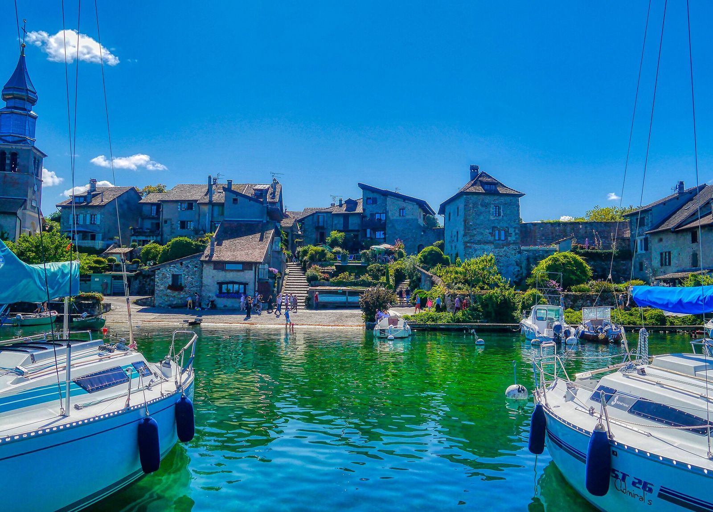

In short
My Lake covers 16 beaches on the French shore of Lake Geneva, in Haute-Savoie: from Meillerie and Évian in the east to Yvoire, Messery and Chens-sur-Léman near the Geneva border. Each has its own page with the water at 70 cm and today’s wind; water quality can be checked on CIPEL’s beach map.
What are the beaches on the French shore?
- Meillerie
- Lugrin
- Maxilly
- Neuvecelle
- Évian
- Publier – Amphion
- Thonon
- Thonon – Saint-Disdille
- Anthy-sur-Léman
- Margencel
- Sciez
- Excenevex
- Yvoire
- Nernier
- Messery
- Chens-sur-Léman
Where can you eat by the water on the French side?
French shore
- Bar-Restaurant de la Plage municipale, Thonon-les-Bains (May to September): In the middle of the town beach on Quai de Ripaille: dish of the day and local specialities, feet in the water.
- Hôtel Restaurant de la Plage, Excenevex: Feet in the water all year round, lake and mountain views, seasonal home cooking.
- La Guinguette de la plage, Excenevex: The beach bar on Excenevex’s big sandy beach.
- Restaurant Plage Les Pêcheurs, Sciez: An institution since 1964: feet-in-the-water terrace under century-old plane trees.
- Yacht Restaurant, Évian-les-Bains: At the Hilton on Quai Paul-Léger, Mediterranean food facing the lake.
- Ô Lac, Neuvecelle: Hotel restaurant at Grande Rive, panoramic terrace facing the lake.
- Hôtel-Restaurant du Port, Yvoire (March to October): Medieval village, terrace on the harbour on the French side.
What is there to do on the water on the French side?
- Centre nautique d’Évian, Évian (July to August), near Évian: Town base on Avenue du Général-Dupas: rowing boats, pedal boats and paddles, July and August afternoons.
- Evolution 2 Thonon, Thonon, near Thonon: Water-sports base on Quai de Ripaille near Pinède beach: paddle, giant paddle, kayak, pedal boat.
- W-school, Thonon-les-Bains, near Thonon: On the town beach, Quai de Ripaille: wakesurf, wakeboard, water-skiing, foil and wing.
- Poolsnap, Sciez, near Sciez: Water-ski school at Sciez harbour, specialising in wakesurf and wakeboard, beginner to expert.
How do you check the water quality?
For French beaches, the app has no recent test results: it links to CIPEL’s beach map. See how to check water quality. Today’s temperature for each beach is in the app.
Lake Geneva’s water right now
Each beach’s water temperature is in the My Lake app, updated every three hours.